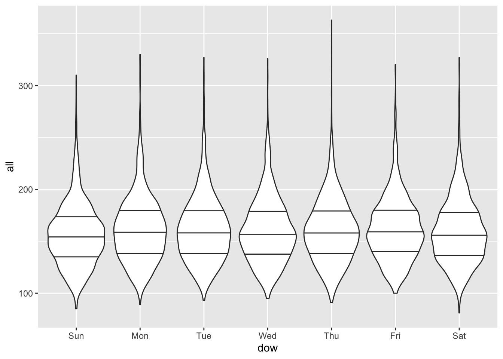

Chapter 3 Time series / case-crossover study designs
3.1 Reading
The readings for this chapter are:
- Vicedo-Cabrera, Sera, and Gasparrini (2019), with supplemental material available to download by clicking http://links.lww.com/EDE/B504
- Armstrong, Gasparrini, and Tobias (2014), with supplemental material available at https://bmcmedresmethodol.biomedcentral.com/articles/10.1186/1471-2288-14-122#Sec13
3.2 Time series data
Example datasets are available as part of the supplemental material for
both of the articles in this chapter’s readings. For Vicedo-Cabrera, Sera, and Gasparrini (2019),
the example data are available as the file “lndn_obs.csv”. These data are
saved in a csv format, and so they can be read into R using the
read_csv function from the readr package (part of the tidyverse).
For example, you can use the following code to read in these data,
assuming you have saved them in a “data” subdirectory of your current
working directory:
library(tidyverse) # Loads all the tidyverse packages, including readr
obs <- read_csv("data/lndn_obs.csv")
obs## # A tibble: 8,279 x 14
## date year month day doy dow all all_0_64 all_65_74 all_75_84
## <date> <dbl> <dbl> <dbl> <dbl> <chr> <dbl> <dbl> <dbl> <dbl>
## 1 1990-01-01 1990 1 1 1 Mon 220 38 38 82
## 2 1990-01-02 1990 1 2 2 Tue 257 50 67 87
## 3 1990-01-03 1990 1 3 3 Wed 245 39 59 86
## 4 1990-01-04 1990 1 4 4 Thu 226 41 45 77
## 5 1990-01-05 1990 1 5 5 Fri 236 45 54 85
## 6 1990-01-06 1990 1 6 6 Sat 235 48 48 84
## 7 1990-01-07 1990 1 7 7 Sun 231 38 49 96
## 8 1990-01-08 1990 1 8 8 Mon 235 46 57 76
## 9 1990-01-09 1990 1 9 9 Tue 250 48 54 96
## 10 1990-01-10 1990 1 10 10 Wed 214 44 46 62
## # … with 8,269 more rows, and 4 more variables: all_85plus <dbl>, tmean <dbl>,
## # tmin <dbl>, tmax <dbl>This example dataset shows many characteristics that are common for datasets for time series studies in environmental epidemiology. Time series data are essentially a sequence of data points repeatedly taken over a certain time interval (e.g. day, week, month etc). General characteristics of time series data for environmental epidemiology studies are:
- Observations are given at an aggregated level. For example, instead of
individual observations for each person in London, the
obsdata give counts of deaths throughout London. The level of aggregation is often determined by geopolitical boundaries, for example counties of ZIP codes in the US. - Observations are given at regularly spaced time steps over a period. In the
obsdataset, the time interval is day. Typically, values will be provided continuously over that time period, with observations for each time interval. Occasionally, however, the time series data may only be available for particular seasons (e.g., only warm season dates for an ozone study), or there may be some missing data on either the exposure or health outcome over the course of the study period. - Daily observations are given for the health outcome, for the environmental
exposure of interest, and for potential time-varying confounders. In the
obsdataset, the health outcome is mortality (from all causes; sometimes, the health outcome will focus on a specific cause of mortality or other health outcomes such as hospitalizations or emergency room visits). Counts are given for everyone in the city for each day (allcolumn), as well as for specific age categories (all_0_64for all deaths among those up to 64 years old, and so on). The exposure of interest in theobsdataset is temperature, and three metrics of this are included (tmean,tmin, andtmax). Day of the week is one time-varying factor that could be a confounder, or at least help explain variation in the outcome (mortality). This is included through thedowvariable in theobsdata. Sometimes, you will also see a marker for holidays included as a potential time-varying confounder, or other exposure variables (temperature is a potential confounder, for example, when investigating the relationship between air pollution and mortality risk). - Multiple metrics of an exposure and / or multiple health outcome counts
may be included for each time step. In the
obsexample, three metrics of temperature are included (minimum daily temperature, maximum daily temperature, and mean daily temperature). Several counts of mortality are included, providing information for specific age categories in the population.
When working with time series data, it is helpful to start with some exploratory
data analysis. The following applied exercise will take you through some of the
questions you might want to answer through this type of exploratory analysis. In
general, the lubridate package is an excellent tool for working with date data
in R (although, in the example code above, we mostly used tools from base R).
You may find it worthwhile to explore this package some more. There is a helpful
chapter in Wickham and Grolemund (2016), https://r4ds.had.co.nz/dates-and-times.html, as well
as a cheatsheet at
https://evoldyn.gitlab.io/evomics-2018/ref-sheets/R_lubridate.pdf. For
visualizations, if you are still learning techniques in R, two books
you may find useful are
Healy (2018) (available online at https://socviz.co/) and Chang (2018)
(available online at http://www.cookbook-r.com/Graphs/).
Applied: Exploring time series data
Read the example time series data in R and explore it to answer the following questions:
- What is the study period for the example
obsdataset? (i.e., what dates / years are covered by the time series data?) - Are there any missing dates within this time period?
- Are there seasonal trends in the exposure? In the outcome?
- Are there long-term trends in the exposure? In the outcome?
- Is the outcome associated with day of week? Is the exposure associated with day of week?
Based on your exploratory analysis in this section, talk about the potential for confounding when these data are analyzed to estimate the association between daily temperature and city-wide mortality. Is confounding by seasonal trends a concern? How about confounding by long-term trends in exposure and mortality? How about confounding by day of week?
Applied exercise: Example code
- What is the study period for the example
obsdataset? (i.e., what dates / years are covered by the time series data?)
In the obs dataset, the date of each observation is included in a column called
date. The data type of this column is “Date”—you can check this by using
the class function from base R:
## [1] "Date"Since this column has a “Date” data type, you can run some mathematical function
calls on it. For example, you can use the min function from base R to get the
earliest date in the dataset and the max function to get the latest.
## [1] "1990-01-01"## [1] "2012-08-31"You can also run the range function to get both the earliest and latest dates
with a single call:
## [1] "1990-01-01" "2012-08-31"- Are there any missing dates within this time period?
There are a few things you should check to answer this question. First
(and easiest), you can check to see if there are any NA values within
any of the observations in the dataset. The summary function will provide
a summary of the values in each column of the dataset, including the count
of missing values (NAs) if there are any:
## date year month day
## Min. :1990-01-01 Min. :1990 Min. : 1.000 Min. : 1.00
## 1st Qu.:1995-09-01 1st Qu.:1995 1st Qu.: 3.000 1st Qu.: 8.00
## Median :2001-05-02 Median :2001 Median : 6.000 Median :16.00
## Mean :2001-05-02 Mean :2001 Mean : 6.464 Mean :15.73
## 3rd Qu.:2006-12-31 3rd Qu.:2006 3rd Qu.: 9.000 3rd Qu.:23.00
## Max. :2012-08-31 Max. :2012 Max. :12.000 Max. :31.00
## doy dow all all_0_64
## Min. : 1.0 Length:8279 Min. : 81.0 Min. : 9.0
## 1st Qu.: 90.5 Class :character 1st Qu.:138.0 1st Qu.:27.0
## Median :180.0 Mode :character Median :157.0 Median :32.0
## Mean :181.3 Mean :160.2 Mean :32.4
## 3rd Qu.:272.0 3rd Qu.:178.0 3rd Qu.:37.0
## Max. :366.0 Max. :363.0 Max. :64.0
## all_65_74 all_75_84 all_85plus tmean
## Min. : 6.00 Min. : 17.00 Min. : 17.00 Min. :-5.503
## 1st Qu.:23.00 1st Qu.: 41.00 1st Qu.: 39.00 1st Qu.: 7.470
## Median :29.00 Median : 49.00 Median : 45.00 Median :11.465
## Mean :30.45 Mean : 50.65 Mean : 46.68 Mean :11.614
## 3rd Qu.:37.00 3rd Qu.: 58.00 3rd Qu.: 53.00 3rd Qu.:15.931
## Max. :70.00 Max. :138.00 Max. :128.00 Max. :29.143
## tmin tmax
## Min. :-8.940 Min. :-3.785
## 1st Qu.: 3.674 1st Qu.:10.300
## Median : 7.638 Median :14.782
## Mean : 7.468 Mean :15.058
## 3rd Qu.:11.438 3rd Qu.:19.830
## Max. :20.438 Max. :37.087Based on this analysis, all observations are complete for all dates included in the dataset.
However, this does not guarantee that every date between the start date and
end date of the study period are included in the recorded data. Sometimes,
some dates might not get recorded at all in the dataset, and the summary
function won’t help you determine when this is the case.
There are a few alternative explorations you can do. First, you can check the number of days between the start and end date of the study period, and then see if the number of observations in the dataset is the same:
# Calculate number of days in study period
obs %>% # Using piping (%>%) throughout to keep code clear
pull(date) %>% # Extract the `date` column as a vector
range() %>% # Take the range of dates (earliest and latest)
diff() # Calculate time difference from start to finish of study ## Time difference of 8278 days## [1] 8279- Are there seasonal trends in the exposure? In the outcome?
You can use a simple plot to visualize patterns over time in both the exposure
and the outcome. For example, the following code plots a dot for each daily
temperature observation over the study period. The points are set to a smaller
size (size = 0.5) and plotted with some transparency (alpha = 0.5) since
there are so many observations.
 There is clear evidence here of a strong seasonal trend in mean temperature,
with values typically lowest in the winter and highest in the summer.
There is clear evidence here of a strong seasonal trend in mean temperature,
with values typically lowest in the winter and highest in the summer.
You can plot the outcome variable in the same way:

Again, there are seasonal trends, although in this case they are inversed. Mortality tends to be highest in the winter and lowest in the summer. Further, the seasonal pattern is not equally strong in all years—some years it has a much higher winter peak, probably in conjunction with severe influenza seasons.
Another way to look for seasonal trends is with a heatmap-style visualization, with day of year along the x-axis and year along the y-axis. This allows you to see patterns that repeat around the same time of the year each year (and also unusual deviations from normal seaonsal patterns).
For example, here’s a plot showing temperature in each year, where the
observations are aligned on the x-axis by time in year. We’ve reversed
the y-axis so that the earliest years in the study period start at the top
of the visual, then later study years come later—this is a personal style,
and it would be no problem to leave the y-axis as-is. We’ve used the
viridis color scale for the fill, since that has a number of features
that make it preferable to the default R color scale, including that it
is perceptible for most types of color blindness and be printed out in grayscale
and still be correctly interpreted.
## Warning: package 'viridis' was built under R version 4.0.2## Warning: package 'viridisLite' was built under R version 4.0.1ggplot(obs, aes(x = doy, y = year, fill = tmean)) +
geom_tile() +
scale_y_reverse() +
scale_fill_viridis()From this visualization, you can see that temperatures tend to be higher in the summer months and lower in the winter months. “Spells” of extreme heat or cold are visible—where extreme temperatures tend to persist over a period, rather than randomly fluctuating within a season. You can also see unusual events, like the extreme heat wave in the summer of 2003, indicated with the brightest yellow in the plot.
We created the same style of plot for the health outcome. In this case, we focused on mortality among the oldest age group, as temperature sensitivity tends to increase with age, so this might be where the strongest patterns are evident.
ggplot(obs, aes(x = doy, y = year, fill = all_85plus)) +
geom_tile() +
scale_y_reverse() +
scale_fill_viridis()
For mortality, there tends to be an increase in the winter compared to the summer. Some winters have stretches with particularly high mortality—these are likely a result of seasons with strong influenza outbreaks. You can also see on this plot the impact of the 2003 heat wave on mortality among this oldest age group.
- Are there long-term trends in the exposure? In the outcome?
Some of the plots we created in the last section help in exploring this question. For example, the following plot shows a clear pattern of decreasing daily mortality counts, on average, over the course of the study period:
It can be helpful to add a smooth line to help detect these longer-term
patterns, which you can do with geom_smooth:

You could also take the median mortality count across each year in the study period, although you should take out any years without a full year’s worth of data before you do this, since there are seasonal trends in the outcome:
obs %>%
group_by(year) %>%
filter(year != 2012) %>% # Take out the last year
summarize(median_mort = median(all)) %>%
ggplot(aes(x = year, y = median_mort)) +
geom_line()## `summarise()` ungrouping output (override with `.groups` argument)
- Is the outcome associated with day of week? Is the exposure associated with day of week?
The data already has day of week as a column in the data (dow). However,
this is in a character data type, so it doesn’t have the order of weekdays
encoded (e.g., Monday comes before Tuesday). This makes it hard to look for
patterns related to things like weekend / weekday.
## [1] "character"We could convert this to a factor and encode the weekday order when we do
it, but it’s even easier to just recreate the column from the date column.
We used the wday function from the lubridate package to do this—it extracts
weekday as a factor, with the order of weekdays encoded (using a special
“ordered” factor type):
## Warning: package 'lubridate' was built under R version 4.0.2##
## Attaching package: 'lubridate'## The following objects are masked from 'package:base':
##
## date, intersect, setdiff, union## [1] "ordered" "factor"## [1] "Sun" "Mon" "Tue" "Wed" "Thu" "Fri" "Sat"We looked at the mean, median, and 25th and 75th quantiles of the mortality counts by day of week:
obs %>%
group_by(dow) %>%
summarize(mean(all),
median(all),
quantile(all, 0.25),
quantile(all, 0.75))## `summarise()` ungrouping output (override with `.groups` argument)## # A tibble: 7 x 5
## dow `mean(all)` `median(all)` `quantile(all, 0.25)` `quantile(all, 0.75)`
## <ord> <dbl> <dbl> <dbl> <dbl>
## 1 Sun 156. 154 136 173
## 2 Mon 161. 159 138 179
## 3 Tue 161. 158 139 179
## 4 Wed 160. 157 138. 179
## 5 Thu 161. 158 139 179
## 6 Fri 162. 159 141 179
## 7 Sat 159. 156 137 178Mortality tends to be a bit higher on weekdays than weekends, but it’s not a dramatic difference.
We did the same check for temperature:
obs %>%
group_by(dow) %>%
summarize(mean(tmean),
median(tmean),
quantile(tmean, 0.25),
quantile(tmean, 0.75))## `summarise()` ungrouping output (override with `.groups` argument)## # A tibble: 7 x 5
## dow `mean(tmean)` `median(tmean)` `quantile(tmean, 0.2… `quantile(tmean, 0.…
## <ord> <dbl> <dbl> <dbl> <dbl>
## 1 Sun 11.6 11.3 7.48 15.9
## 2 Mon 11.6 11.4 7.33 15.8
## 3 Tue 11.5 11.4 7.48 15.9
## 4 Wed 11.7 11.7 7.64 16.0
## 5 Thu 11.6 11.5 7.57 16.0
## 6 Fri 11.6 11.6 7.41 15.8
## 7 Sat 11.6 11.5 7.53 15.9In this case, there does not seem to be much of a pattern by weekday.
You can also visualize the association using boxplots:

You can also try violin plots—these show the full distribution better than boxplots, which only show quantiles.

3.3 Fitting models
One of the readings for this week, Vicedo-Cabrera, Sera, and Gasparrini (2019), includes a section on fitting exposure-response functions to describe the association between daily mean temperature and mortality risk. This article includes example code in its supplemental material, with code for fitting the model to these time series data in the file named “01EstimationERassociation.r”. The model may at first seem complex, but it is made up of a number of fairly straightforward pieces (although some may initially seem complex):
- The model framework is a generalized linear model (GLM)
- This GLM is fit assuming an error distribution and a link function appropriate for count data
- The GLM is fit assuming an error distribution that is also appropriate for data that may be overdispersed
- The model includes control for day of the week by including a categorical variable
- The model includes control for long-term and seasonal trends by including a spline (in this case, a natural cubic spline) for the day in the study
- The model fits a flexible, non-linear association between temperature and mortality risk also using a spline
- The model fits a flexible non-linear association between temperature on a series of preceeding days and current day and mortality risk on the current day using a distributed lag approach
- The model jointly describes both of the two previous non-linear associations by fitting these two elements through one construct in the GLM, a cross-basis term
In this section, we will work through the elements, building up the code to get to the full model that is fit in Vicedo-Cabrera, Sera, and Gasparrini (2019).
Fitting a GLM to time series data
The GLM framework unites a number of types of regression models you may have previously worked with. One basic regression model that can be fit within this framework is a linear regression model. However, the framework also allows you to also fit, among others, logistic regression models (useful when the outcome variable can only take one of two values, e.g., success / failure or alive / dead), Poisson regression models (useful when the outcome variable is a count or rate).
This generalized framework brings some unity to these different types of
regression models. From a practical standpoint, it has allowed software
developers to easily provide a common interface to fit these types of models.
In R, the common function call to fit GLMs is glm.
Within the GLM framework, the elements that separate different regression models include the link function and the error distribution. The error distribution encodes the assumption you are enforcing about how the errors after fitting the model are distributed. If the outcome data are normally distributed (a.k.a., follow a Gaussian distribution), after accounting for variance explained in the outcome by any of the model covariates, then a linear regression model may be appropriate. For count data—like numbers of deaths a day—this is unlikely, unless the average daily mortality count is very high (count data tend to come closer to a normal distribution the further their average gets from 0). For binary data—like whether each person in a study population died on a given day or not—normally distributed errors are also unlikely. Instead, in these two cases, it is typically more appropriate to fit GLMs with Poisson and binomial “families”, respectively, where the family designation includes an appropriate specification for the variance when fitting the model based on these outcome types.
The other element that distinguishes different types of regression within the GLM framework is the link function. The link function applies a transformation on the combination of independent variables in the regression equation when fitting the model. With normally distributed data, an identity link is often appropriate—with this link, the combination of independent variables remain unchanged (i.e., keep their initial “identity”). With count data, a log link is often more appropriate, while with binomial data, a logit link is often used.
Finally, data will often not perfectly adhere to assumptions. For example, the Poisson family of GLMs assumes that variance follows a Poisson distribution (The probability mass function for Poisson distribution \(X \sim {\sf Poisson}(\mu)\) is denoted by \(f(k;\mu)=Pr[X=k]= \displaystyle \frac{\mu^{k}e^{-\mu}}{k!}\), where \(k\) is the number of occurences, and \(\mu\) is equal to the expected number of cases). With this distribution, the variance is equal to the mean (\(\mu=E(X)=Var(X)\)). With real-life data, this assumption is often not valid, and in many cases the variance in real life count data is larger than the mean. This can be accounted for when fitting a GLM by setting an error distribution that does not require the variance to equal the mean—instead, both a mean value and something like a variance are estimated from the data, assuming an overdispersion parameter \(\phi\) so that \(Var(X)=\phi E(X)\). In environmental epidemiology, time series are often fit to allow for this overdispersion. This is because if the data are overdispersed but the model does not account for this, the standard errors on the estimates of the model parameters may be artificially small. If the data are not overdispersed (\(\phi=1\)), the model will identify this when being fit to the data, so it is typically better to prefer to allow for overdispersion in the model (if the size of the data were small, you may want to be parsimonious and avoid unneeded complexity in the model, but this is typically not the case with time series data).
In the next section, you will work through the steps of developing a GLM to fit
the example dataset obs. For now, you will only fit a linear association
between mean daily temperature and mortality risk, eventually including control
for day of week. In later work, especially the next chapter, we will build up
other components of the model, including control for the potential confounders
of long-term and seasonal patterns, as well as advancing the model to fit
non-linear associations, distributed by time, through splines, a distributed lag
approach, and a cross-basis term.
Applied: Fitting a GLM to time series data
In R, the function call used to fit GLMs is glm. Most of you have likely
covered GLMs, and ideally this function call, in previous courses. If you are
unfamiliar with its basic use, you will want to refresh yourself on this
topic. [Add some online resources that go over basics of GLMs in R.]
- Fit a GLM to estimate the association between mean daily temperature (as the
independent variable) and daily mortality count (as the dependent variable),
first fitting a linear regression. (Since the mortality data are counts, we will
want to shift to a different type of regression within the GLM framework, but
this step allows you to develop a simple
glmcall, and to remember where to include the data and the independent and dependent variables within this function call.) - Change your function call to fit a regression model in the Poisson family.
- Change your function call to allow for overdispersion in the outcome data (daily mortality count). How does the estimated coefficient for temperature change between the model fit for #2 and this model? Check both the central estimate and its estimated standard error.
- Change your function call to include control for day of week.
Applied exercise: Example code
- Fit a GLM to estimate the association between mean daily temperature (as the independent variable) and daily mortality count (as the dependent variable), first fitting a linear regression.
This is the model you are fitting:
\(Y_{t}=\beta_{0}+\beta_{1}X1_{t}+\epsilon\)
where \(Y_{t}\) is the mortality count on day \(t\), \(X1_{t}\) is the mean temperature for day \(t\) and \(\epsilon\) is the error term. Since this is a linear model we are assuming a Gaussian error distribution \(\epsilon \sim {\sf N}(0, \sigma^{2})\), where \(\sigma^{2}\) is the variance not explained by the covariates (here just temperature).
To do this, you will use the glm call. If you would like to save model fit
results to use later, you assign the output a name as an R object
(mod_linear_reg in the example code). If your study data are in a dataframe,
you can specify these data in the glm call with the data parameter.
Once you do this, you can use column names directly in the model formula.
In the model formula, the dependent variable is specified first (all, the
column for daily mortality counts for all ages, in this example), followed
by a tilde (~), followed by all independent variables (only tmean in this
example). If multiple independent variables are included, they are joined using
+—we’ll see an example when we start adding control for confounders later.
Once you have fit a model and assigned it to an R object, you can explore it and use resulting values. First, the print method for a regression model gives some summary information. This method is automatically called if you enter the model object’s name at the console:
##
## Call: glm(formula = all ~ tmean, data = obs)
##
## Coefficients:
## (Intercept) tmean
## 187.647 -2.366
##
## Degrees of Freedom: 8278 Total (i.e. Null); 8277 Residual
## Null Deviance: 8161000
## Residual Deviance: 6766000 AIC: 79020More information is printed if you run the summary method on the model
object:
##
## Call:
## glm(formula = all ~ tmean, data = obs)
##
## Deviance Residuals:
## Min 1Q Median 3Q Max
## -77.301 -20.365 -1.605 17.502 169.280
##
## Coefficients:
## Estimate Std. Error t value Pr(>|t|)
## (Intercept) 187.64658 0.73557 255.10 <2e-16 ***
## tmean -2.36555 0.05726 -41.31 <2e-16 ***
## ---
## Signif. codes: 0 '***' 0.001 '**' 0.01 '*' 0.05 '.' 0.1 ' ' 1
##
## (Dispersion parameter for gaussian family taken to be 817.4629)
##
## Null deviance: 8161196 on 8278 degrees of freedom
## Residual deviance: 6766140 on 8277 degrees of freedom
## AIC: 79019
##
## Number of Fisher Scoring iterations: 2Make sure you are familiar with the information provided from the model object, as well as how to interpret values like the coefficient estimates and their standard errors and p-values. These basic elements should have been covered in previous coursework (even if a different programming language was used to fit the model), and so we will not be covering them in great depth here, but instead focusing on some of the more advanced elements of how regression models are commonly fit to data from time series and case-crossover study designs in environmental epidemiology. For a refresher on the basics of fitting statistical models in R, you may want to check out Chapters 22 through 24 of Wickham and Grolemund (2016), a book that is available online.
Finally, there are some newer tools for extracting information from model fit
objects. The broom package extracts different elements from these objects
and returns them in a “tidy” data format, which makes it much easier to use
the output further in analysis with functions from the “tidyverse” suite of
R packages. These tools are very popular and powerful, and so the broom tools
can be very useful in working with output from regression modeling in R.
The broom package includes three main functions for extracting data from
regression model objects. First, the glance function returns overall data
about the model fit, including the AIC and BIC:
## # A tibble: 1 x 8
## null.deviance df.null logLik AIC BIC deviance df.residual nobs
## <dbl> <int> <dbl> <dbl> <dbl> <dbl> <int> <int>
## 1 8161196. 8278 -39507. 79019. 79041. 6766140. 8277 8279The tidy function returns data at the level of the model coefficients,
including the estimate for each model parameter, its standard error, test
statistic, and p-value.
## # A tibble: 2 x 5
## term estimate std.error statistic p.value
## <chr> <dbl> <dbl> <dbl> <dbl>
## 1 (Intercept) 188. 0.736 255. 0
## 2 tmean -2.37 0.0573 -41.3 0Finally, the augment function returns data at the level of the original
observations, including the fitted value for each observation, the residual
between the fitted and true value, and some measures of influence on the model
fit.
## # A tibble: 8,279 x 8
## all tmean .fitted .resid .std.resid .hat .sigma .cooksd
## <dbl> <dbl> <dbl> <dbl> <dbl> <dbl> <dbl> <dbl>
## 1 220 3.91 178. 41.6 1.46 0.000359 28.6 0.000380
## 2 257 5.55 175. 82.5 2.89 0.000268 28.6 0.00112
## 3 245 4.39 177. 67.7 2.37 0.000330 28.6 0.000928
## 4 226 5.43 175. 51.2 1.79 0.000274 28.6 0.000440
## 5 236 6.87 171. 64.6 2.26 0.000211 28.6 0.000539
## 6 235 9.23 166. 69.2 2.42 0.000144 28.6 0.000420
## 7 231 6.69 172. 59.2 2.07 0.000218 28.6 0.000467
## 8 235 7.96 169. 66.2 2.31 0.000174 28.6 0.000467
## 9 250 7.27 170. 79.5 2.78 0.000197 28.6 0.000761
## 10 214 9.51 165. 48.9 1.71 0.000139 28.6 0.000202
## # … with 8,269 more rowsOne way you can use augment is to graph the fitted values for each observation
after fitting the model:
mod_linear_reg %>%
augment() %>%
ggplot(aes(x = tmean)) +
geom_point(aes(y = all), alpha = 0.4, size = 0.5) +
geom_line(aes(y = .fitted), color = "red") +
labs(x = "Mean daily temperature", y = "Log(Expected mortality count)")For more on the broom package, including some excellent examples of how it
can be used to streamline complex regression analyses, see Robinson (2014).
There is also a nice example of how it can be used in one of the chapters of
Wickham and Grolemund (2016), available online at https://r4ds.had.co.nz/many-models.html.
- Change your function call to fit a regression model in the Poisson family.
A linear regression is often not appropriate when fitting a model where the outcome variable provides counts, as with the example data. A Poisson regression is often preferred.
For a count distribution were \(Y \sim {\sf Poisson(\mu)}\) we typically fit a model such as
\(g(Y)=\beta_{0}+\beta_{1}X1\), where \(g()\) represents the link function, in this case a log function so that \(log(Y)=\beta_{0}+\beta_{1}X1\). We can also express this as \(Y=exp(\beta_{0}+\beta_{1}X1)\).
In the glm call, you can specify this with the family
parameter, for which “poisson” is one choice.
One thing to keep in mind with this change is that the model now uses a
non-identity link between the combination of independent variable(s) and the
dependent variable. You will need to keep this in mind when you interpret
the estimates of the regression coefficients. While the coefficient estimate
for tmean from the linear regression could be interpreted as the expected
increase in mortality counts for a one-unit (i.e., one degree Celsius) increase
in temperature, now the estimated coefficient should be interpreted as the
expected increase in the natural log-transform of mortality count for a one-unit
increase in temperature.
##
## Call:
## glm(formula = all ~ tmean, family = "poisson", data = obs)
##
## Deviance Residuals:
## Min 1Q Median 3Q Max
## -6.5945 -1.6365 -0.1167 1.3652 12.2221
##
## Coefficients:
## Estimate Std. Error z value Pr(>|z|)
## (Intercept) 5.2445409 0.0019704 2661.67 <2e-16 ***
## tmean -0.0147728 0.0001583 -93.29 <2e-16 ***
## ---
## Signif. codes: 0 '***' 0.001 '**' 0.01 '*' 0.05 '.' 0.1 ' ' 1
##
## (Dispersion parameter for poisson family taken to be 1)
##
## Null deviance: 49297 on 8278 degrees of freedom
## Residual deviance: 40587 on 8277 degrees of freedom
## AIC: 97690
##
## Number of Fisher Scoring iterations: 4You can see this even more clearly if you take a look at the association between temperature for each observation and the expected mortality count fit by the model. First, if you look at the fitted values without transforming, they will still be in a state where mortality count is log-transformed. You can see by looking at the range of the y-scale that these values are for the log of expected mortality, rather than expected mortality, and that the fitted association is linear:
mod_pois_reg %>%
augment() %>%
ggplot(aes(x = tmean)) +
geom_point(aes(y = log(all)), alpha = 0.4, size = 0.5) +
geom_line(aes(y = .fitted), color = "red") +
labs(x = "Mean daily temperature", y = "Log(Expected mortality count)")
You can use exponentiation to transform the fitted values back to just be the expected mortality count based on the model fit. Once you make this transformation, you can see how the link in the Poisson family specification enforced a curved relationship between mean daily temperature and the untransformed expected mortality count.
mod_pois_reg %>%
augment() %>%
ggplot(aes(x = tmean)) +
geom_point(aes(y = all), alpha = 0.4, size = 0.5) +
geom_line(aes(y = exp(.fitted)), color = "red") +
labs(x = "Mean daily temperature", y = "Expected mortality count")
- Change your function call to allow for overdispersion in the outcome data (daily mortality count). How does the estimated coefficient for temperature change between the model fit for #2 and this model? Check both the central estimate and its estimated standard error.
In the R glm call, there is a family that is similar to Poisson (including
using a log link), but that allows for overdispersion. You can specify it
with the “quasipoisson” choice for the family parameter in the glm call:
When you use this family, there will be some new information in the summary for the model object. It will now include a dispersion parameter (\(\phi\)). If this is close to 1, then the data were close to the assumed variance for a Poisson distribution (i.e., there was little evidence of overdispersion). In the example, the overdispersion is around 5, suggesting the data are overdispersed (this might come down some when we start including independent variables that explain some of the variation in the outcome variable, like long-term and seasonal trends).
##
## Call:
## glm(formula = all ~ tmean, family = "quasipoisson", data = obs)
##
## Deviance Residuals:
## Min 1Q Median 3Q Max
## -6.5945 -1.6365 -0.1167 1.3652 12.2221
##
## Coefficients:
## Estimate Std. Error t value Pr(>|t|)
## (Intercept) 5.2445409 0.0044087 1189.6 <2e-16 ***
## tmean -0.0147728 0.0003543 -41.7 <2e-16 ***
## ---
## Signif. codes: 0 '***' 0.001 '**' 0.01 '*' 0.05 '.' 0.1 ' ' 1
##
## (Dispersion parameter for quasipoisson family taken to be 5.006304)
##
## Null deviance: 49297 on 8278 degrees of freedom
## Residual deviance: 40587 on 8277 degrees of freedom
## AIC: NA
##
## Number of Fisher Scoring iterations: 4If you compare the estimates of the temperature coefficient from the Poisson regression with those when you allow for overdispersion, you’ll see something interesting:
## # A tibble: 1 x 5
## term estimate std.error statistic p.value
## <chr> <dbl> <dbl> <dbl> <dbl>
## 1 tmean -0.0148 0.000158 -93.3 0## # A tibble: 1 x 5
## term estimate std.error statistic p.value
## <chr> <dbl> <dbl> <dbl> <dbl>
## 1 tmean -0.0148 0.000354 -41.7 0The central estimate (estimate column) is very similar. However, the estimated
standard error is larger when the model allows for overdispersion. This
indicates that the Poisson model was too simple, and that its inherent
assumption that data were not overdispersed was problematic. If you naively used
a Poisson regression in this case, then you would estimate a confidence
interval on the temperature coefficient that would be too narrow. This could
cause you to conclude that the estimate was statistically significant when
you should not have (although in this case, the estimate is statistically
significant under both models).
- Change your function call to include control for day of week.
Day of week is included in the data as a categorical variable, using a data type in R called a factor. You are now essentially fitting this model:
\(log(Y)=\beta_{0}+\beta_{1}X1+\gamma^{'}X2\),
where \(X2\) is a categorical variable for day of the week and \(\gamma^{'}\) represents a vector of parameters associated with each category.
It is pretty straightforward to include factors as independent variables in calls
to glm: you just add the column name to the list of other independent variables
with a +. In this case, we need to do one more step: earlier, we added order to
dow, so it would “remember” the order of the week days (Monday before Tuesday,
etc.). However, we need to strip off this order before we include the factor in
the glm call. One way to do this is with the factor call, specifying
ordered = FALSE. Here is the full call to fit this model:
mod_ctrl_dow <- glm(all ~ tmean + factor(dow, ordered = FALSE),
data = obs, family = "quasipoisson")When you look at the summary for the model object, you can see that the model has fit a separate model parameter for six of the seven weekdays. The one weekday that isn’t fit (Sunday in this case) serves as a baseline —these estimates specify how the log of the expected mortality count is expected to differ on, for example, Monday versus Sunday (by about 0.03), if the temperature is the same for the two days.
##
## Call:
## glm(formula = all ~ tmean + factor(dow, ordered = FALSE), family = "quasipoisson",
## data = obs)
##
## Deviance Residuals:
## Min 1Q Median 3Q Max
## -6.3211 -1.6476 -0.1313 1.3549 12.5286
##
## Coefficients:
## Estimate Std. Error t value Pr(>|t|)
## (Intercept) 5.2208502 0.0065277 799.804 < 2e-16 ***
## tmean -0.0147723 0.0003538 -41.750 < 2e-16 ***
## factor(dow, ordered = FALSE)Mon 0.0299282 0.0072910 4.105 4.08e-05 ***
## factor(dow, ordered = FALSE)Tue 0.0292575 0.0072920 4.012 6.07e-05 ***
## factor(dow, ordered = FALSE)Wed 0.0255224 0.0073020 3.495 0.000476 ***
## factor(dow, ordered = FALSE)Thu 0.0269580 0.0072985 3.694 0.000222 ***
## factor(dow, ordered = FALSE)Fri 0.0355431 0.0072834 4.880 1.08e-06 ***
## factor(dow, ordered = FALSE)Sat 0.0181489 0.0073158 2.481 0.013129 *
## ---
## Signif. codes: 0 '***' 0.001 '**' 0.01 '*' 0.05 '.' 0.1 ' ' 1
##
## (Dispersion parameter for quasipoisson family taken to be 4.992004)
##
## Null deviance: 49297 on 8278 degrees of freedom
## Residual deviance: 40434 on 8271 degrees of freedom
## AIC: NA
##
## Number of Fisher Scoring iterations: 4You can also see from this summary that the coefficients for the day of the week are all statistically significant. Even though we didn’t see a big difference in mortality counts by day of week in our exploratory analysis, this suggests that it does help explain some variance in mortality observations and will likely be worth including in the final model.
The model now includes day of week when fitting an expected mortality count for each observation. As a result, if you plot fitted values of expected mortality versus mean daily temperature, you’ll see some “hoppiness” in the fitted line:
mod_ctrl_dow %>%
augment() %>%
ggplot(aes(x = tmean)) +
geom_point(aes(y = all), alpha = 0.4, size = 0.5) +
geom_line(aes(y = exp(.fitted)), color = "red") +
labs(x = "Mean daily temperature", y = "Expected mortality count")This is because each fitted value is also incorporating the expected influence of day of week on the mortality count, and that varies across the observations (i.e., you could have two days with the same temperature, but different expected mortality from the model, because they occur on different days).
If you plot the model fits separately for each day of the week, you’ll see that the line is smooth across all observations from the same day of the week:
mod_ctrl_dow %>%
augment() %>%
ggplot(aes(x = tmean)) +
geom_point(aes(y = all), alpha = 0.4, size = 0.5) +
geom_line(aes(y = exp(.fitted)), color = "red") +
labs(x = "Mean daily temperature", y = "Expected mortality count") +
facet_wrap(~ obs$dow)
Wrapping up
At this point, the coefficient estimates suggests that risk of mortality tends to decrease as temperature increases. Do you think this is reasonable? What else might be important to build into the model based on your analysis up to this point?
3.4 Chapter vocabulary
Each class will start with a vocabulary quiz on a select number of the words from the chapter’s vocabulary list. The vocabulary words for this chapter are:
- time-series study design
- case-crossover study design
- exposure
- health outcome
- confounder
- study period
- seasonal trends
- long-term trends
- error distribution
- generalized linear model (GLM)
- link function
- overdispersed
- categorical variable
- spline
- natural cubic spline
- distributed lag
- cross-basis term
References
Armstrong, Ben G, Antonio Gasparrini, and Aurelio Tobias. 2014. “Conditional Poisson Models: A Flexible Alternative to Conditional Logistic Case Cross-over Analysis.” BMC Medical Research Methodology 14 (1): 122.
Chang, Winston. 2018. R Graphics Cookbook: Practical Recipes for Visualizing Data. O’Reilly Media.
Healy, Kieran. 2018. Data Visualization: A Practical Introduction. Princeton University Press.
Robinson, David. 2014. “Broom: An R Package for Converting Statistical Analysis Objects into Tidy Data Frames.” arXiv Preprint arXiv:1412.3565.
Vicedo-Cabrera, Ana M, Francesco Sera, and Antonio Gasparrini. 2019. “Hands-on Tutorial on a Modeling Framework for Projections of Climate Change Impacts on Health.” Epidemiology 30 (3): 321–29.
Wickham, Hadley, and Garrett Grolemund. 2016. R for Data Science: Import, Tidy, Transform, Visualize, and Model Data. " O’Reilly Media, Inc.".